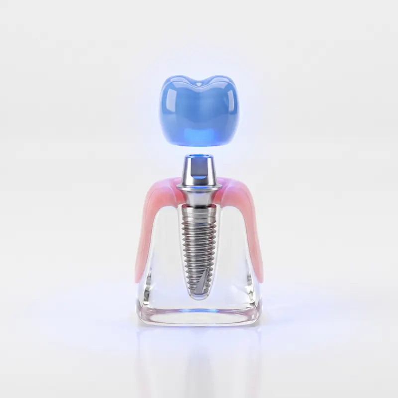
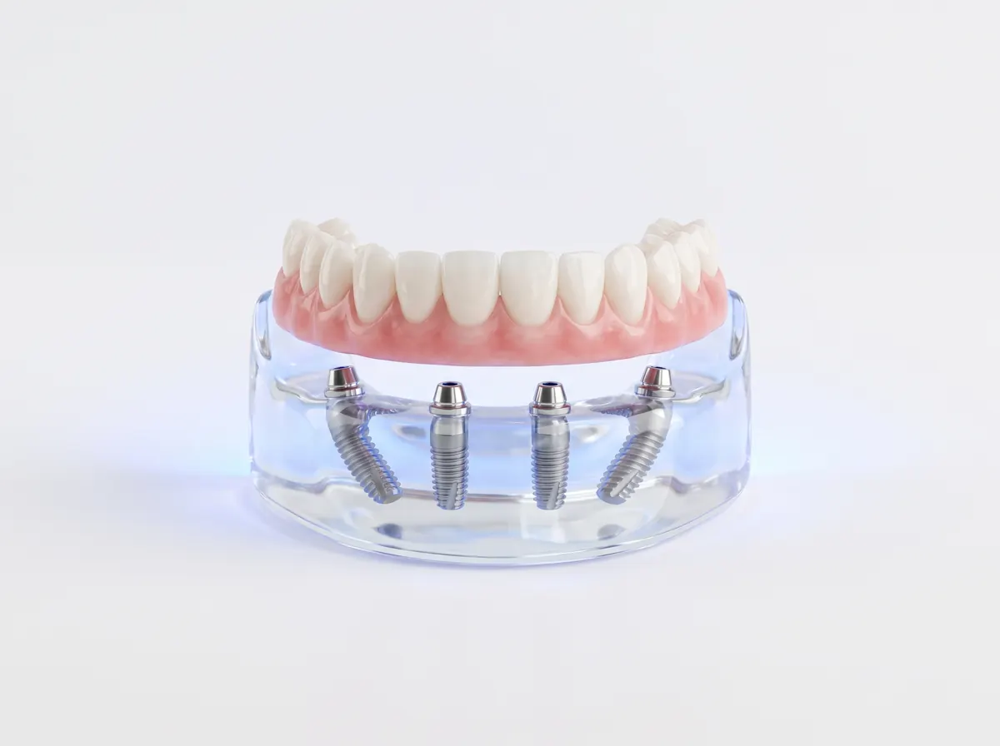
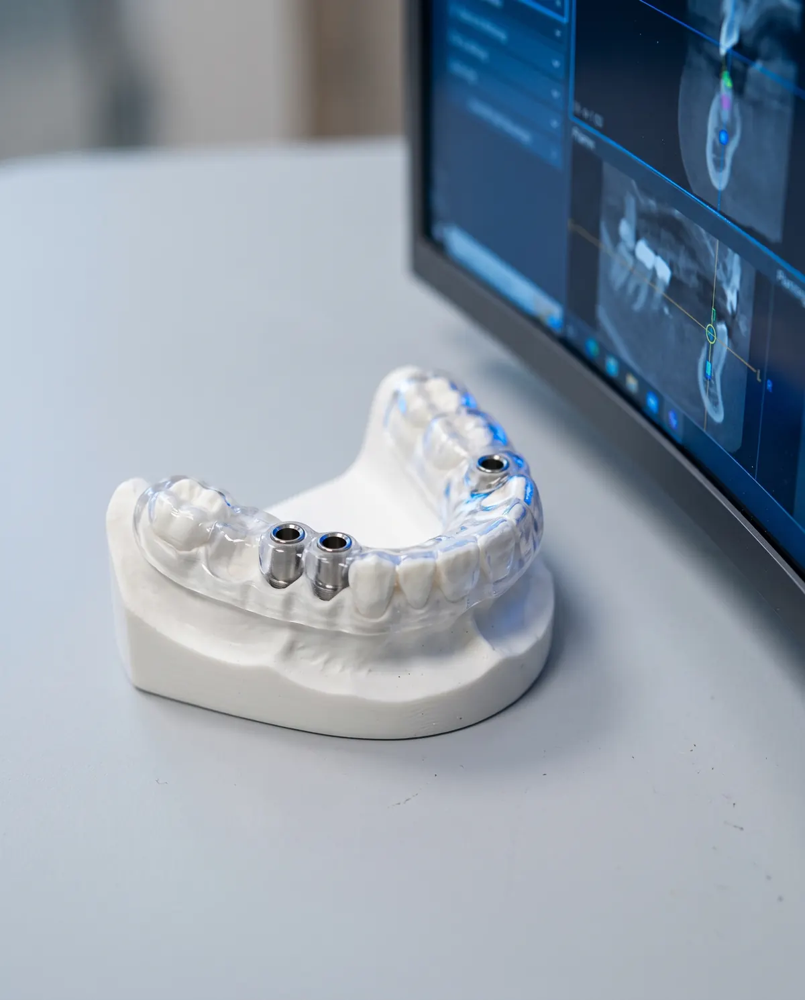
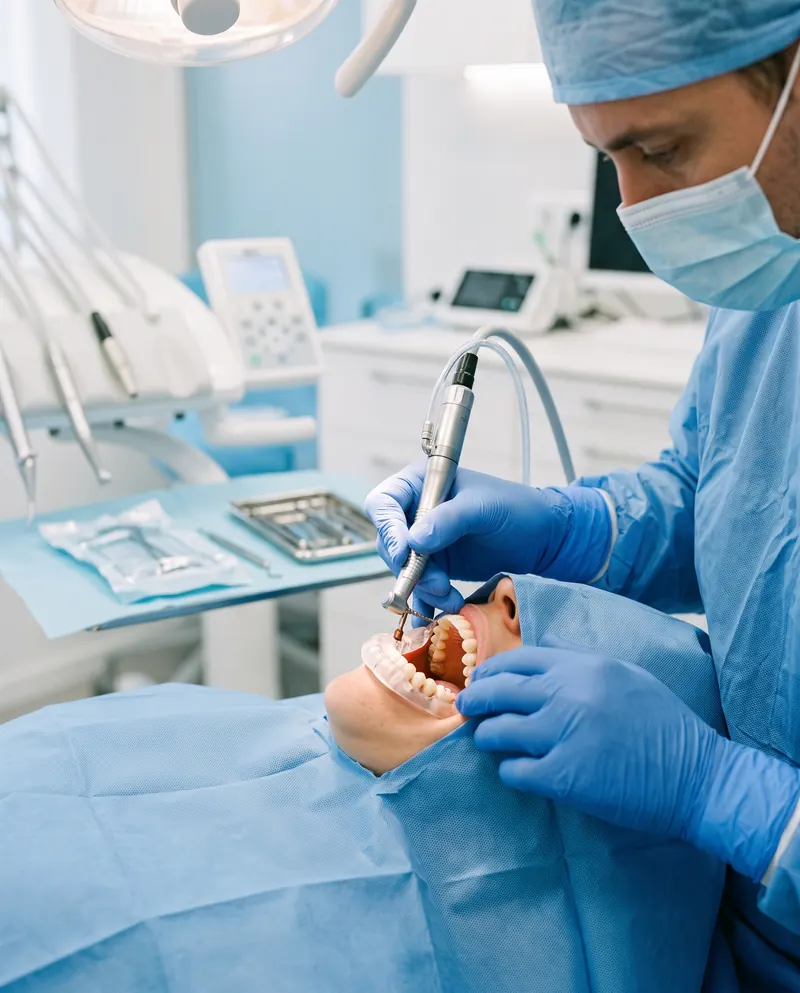
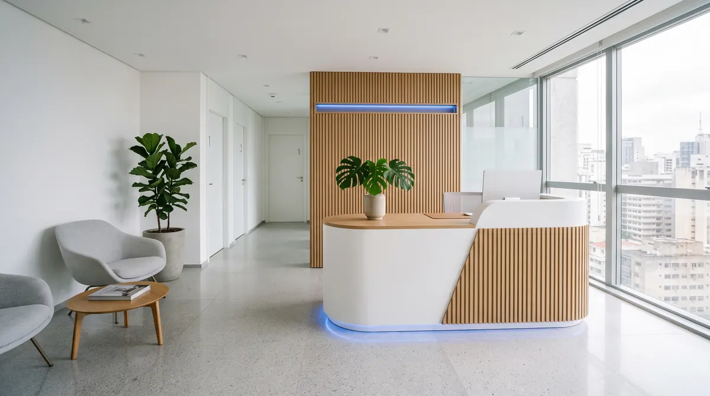

Implantodontista · São Paulo
Dr. Henrique Salles
Implantes, All-on-4 e cirurgia guiada com planejamento digital. Precisão que começa antes do procedimento.
- 18+ anos de experiência
- 400+ implantes por ano
Especialista em
Implantodontia
Certificado em
cirurgia guiada
Com quais problemas
me procuram
Não achou seu caso? Toda reabilitação começa por uma avaliação.
Agendar avaliação (abre o WhatsApp)
Implantes para qualquer
caso clínico
Cada caso pede uma técnica. A indicação vem depois da avaliação, com exames de imagem e planejamento digital.

-
All-on-4
Arcada inteira reabilitada sobre 4 implantes.
Indicado, após avaliação, para quem perdeu todos ou quase todos os dentes de uma arcada. A prótese fixa é instalada sobre quatro implantes em posições estratégicas.
-
Carga imediata
Dente provisório fixo logo após a cirurgia, quando há estabilidade.
Quando o osso oferece estabilidade suficiente, o provisório fixo é instalado logo depois do implante, em vez de você passar um período sem dentes.
-
Cirurgia guiada
Planejamento digital em 3D antes do procedimento.
A tomografia e o escaneamento da boca geram um guia cirúrgico sob medida, que orienta a posição planejada de cada implante.
-
Implante convencional
Em duas etapas, para quem precisa de mais tempo de cicatrização.
O implante fica alguns meses se integrando ao osso e só então recebe a coroa. Costuma ser o caminho quando o osso precisa de mais tempo.
Qual delas serve para você? Isso se define na avaliação.
Falar sobre o meu casoQuando a reabilitação total é a solução indicada
Para quem perdeu todos ou quase todos os dentes de uma arcada e quer voltar a mastigar e sorrir com uma prótese fixa.


Uma arcada inteira de dentes fixos apoiada em quatro implantes. Os dois de trás ficam inclinados para aproveitar melhor o osso disponível.
- 4
- implantes por arcada
- 1
- prótese fixa sobre eles
Provisório fixo, em muitos casos, logo após a cirurgia.
Indicações mais comuns
-
Perdeu todos ou quase todos os dentes
Uma arcada inteira pode ser reabilitada sobre quatro implantes.
-
Usa dentadura que solta ou machuca
A prótese fica parafusada nos implantes e não é removida no dia a dia.
-
Tem dentes comprometidos que não podem ser mantidos
Quando indicado, extrações e implantes são planejados juntos.
-
Tem pouco osso e quer evitar enxertos extensos, quando possível
Os implantes inclinados aproveitam o osso disponível em muitos casos.
-
Quer reduzir o tempo sem dentes
Em muitos casos, um provisório fixo é instalado logo após a cirurgia.
A indicação só é feita após avaliação clínica e tomografia.
Do primeiro exame ao sorriso novo
Quatro etapas, cada uma explicada antes de acontecer. Você sabe o que vem a seguir e por quê.

-
Primeira consulta
Etapa 1: Avaliação e tomografia
Conversa, exame clínico e tomografia 3D para entender o seu caso.
- Escuta das suas queixas, dúvidas e expectativas
- Exame clínico da boca, da gengiva e da mordida
- Tomografia 3D para avaliar o osso disponível
-
Antes da cirurgia
Etapa 2: Planejamento digital
Cada implante é posicionado no computador e vira um guia cirúrgico sob medida.
- Posição, ângulo e profundidade definidos em 3D
- Guia cirúrgico impresso para a sua arcada
- Plano e próximos passos explicados a você
-

Dia do procedimento
Etapa 3: Cirurgia guiada
Procedimento preciso, com anestesia local e, quando indicado, sedação.
- O guia conduz cada implante à posição planejada
- Provisório fixo no mesmo dia, quando indicado
- Orientações claras para os dias seguintes
-
Depois da cirurgia
Etapa 4: Prótese e acompanhamento
Instalação da prótese e retornos programados para cuidar do resultado.
- Prótese ajustada à sua mordida e ao seu sorriso
- Retornos de acompanhamento já programados
- Orientações de higiene e manutenção
Tudo começa com uma conversa. Você entende o seu caso e o plano antes de decidir qualquer coisa.
CRO-SP 000000 Responsável técnico
Quem vai cuidar do seu sorriso
Há mais de 18 anos, o Dr. Henrique Salles se dedica à implantodontia em São Paulo, com foco em reabilitação com implantes, All-on-4 e cirurgia guiada. Cada caso começa com planejamento digital, e você entende cada etapa antes de decidir.
“Implante bem feito é implante bem planejado.”
Formação
- Especialização em Implantodontia
- Aperfeiçoamento em cirurgia guiada e carga imediata
- Atualização contínua em reabilitação oral
- 18+ anos de experiência
- 400+ implantes por ano
- 3D planejamento digital em cada caso
Atendimento nos Jardins São Paulo – SP
Perguntas frequentes
O que os pacientes mais perguntam antes de começar. Respostas diretas, sem rodeios.
Ficou com alguma dúvida?
Mande sua pergunta pelo WhatsApp. A equipe responde em horário comercial.
A cirurgia é feita com anestesia local, para que você fique confortável durante o procedimento. Nos dias seguintes, algum desconforto é esperado e costuma ser controlado com a medicação prescrita e os cuidados que passamos por escrito.
Depende do caso: quantos dentes, qualidade do osso e técnica indicada. Com carga imediata, quando indicada, o dente provisório é instalado logo após a cirurgia. A prótese definitiva vem depois da cicatrização, que costuma levar alguns meses.
Em geral, adultos que perderam um ou mais dentes podem ser avaliados para implante. A indicação depende da sua saúde geral, da quantidade de osso e dos exames de imagem. Por isso tudo começa com uma avaliação completa.
Em muitos casos, sim. Quando falta osso, é possível fazer um enxerto ou usar técnicas que evitam o enxerto, como os implantes inclinados do All-on-4, quando indicado. A tomografia mostra qual caminho faz sentido para você.
Não necessariamente. Com a diabetes controlada e acompanhamento médico, o implante pode ser indicado. O fumo aumenta o risco de complicações na cicatrização, então avaliamos cada caso e orientamos como reduzir esse risco antes e depois da cirurgia.
O valor depende do planejamento de cada caso. Na avaliação você recebe o plano de tratamento e o orçamento.
Com escovação diária, fio dental ou escova interdental e consultas de manutenção nos intervalos indicados. Você recebe as orientações de higiene para o seu tipo de prótese, e o implante é acompanhado ao longo do tempo.
Seu novo sorriso começa com um bom planejamento.
Na avaliação, o Dr. Henrique examina o seu caso, pede os exames necessários e explica com calma as opções de tratamento.
Agendar avaliação
-
Horários
Seg a sex · 8h–19h Sáb · 8h–12h